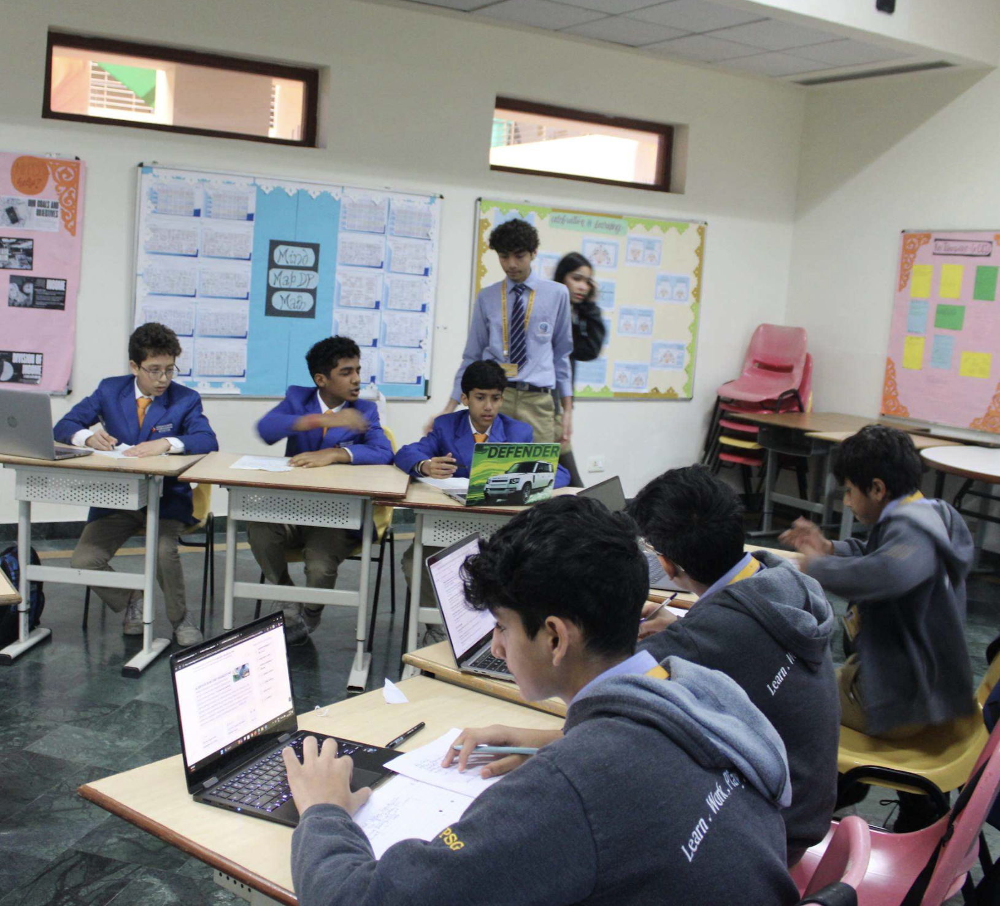

DEBATE · FESTIVAL OF HOPE 2026
Locked
Heads 7.0
A dynamic debate competition for students of Grades 6–8.
Engage with contemporary issues, challenge perspectives and develop the confidence to articulate well-reasoned arguments.

LOCKED HEADS 7.0
The Forces
of Change.
Locked Heads 7.0 is a dynamic and intellectually stimulating debate competition designed for students of Grades 6–8.
The competition provides young debaters with a platform to engage with contemporary issues, challenge perspectives and develop confidence in well-reasoned arguments.
This year's overarching theme is The Forces of Change , exploring how individuals, societies and countries use power and decision-making to create change, build meaningful relationships and shape a more understanding, cooperative and harmonious world.
Through debate, students develop critical thinking, effective communication, collaboration, strategic reasoning and informed global citizenship.
OVERARCHING THEME
The Forces
of Change.
The syllabus explores how people and countries use power to foster positive change, build meaningful relationships, and shape decisions that contribute to greater understanding, cooperation and harmony within and across societies.
Conflict, Power & Global Order
Peace, defence and international relations.
Explore how shifts in global power, conflict, diplomacy and changing international relationships shape the world.
Equity, Development & Social Justice
Inequality, rights, poverty and opportunity.
Examine fairness, development, changing power structures and the role of governments and societies.
Ethical Progress & Technology
AI, science, innovation, digitalisation and ethics.
Consider both the benefits and risks of technological progress and who should control powerful technologies.
FORMAT OF DEBATE
Modified
WSDC.
Team
Each team consists of three students. Three teams will be allowed from each school.
Coin Toss
A coin toss decides the Proposition and Opposition sides.
Motion Reveal
The adjudicator reveals the motion.
Preparation
Teams receive 15 minutes of preparation time.
Speaker Roles
Traditional WSDC speaker roles and requirements remain the same.
No POIs
There will be no Points of Information during the debate.
DEBATE FLOW
Round by
round.
15 Minutes
Teams prepare their case after the motion is revealed. Debaters may use laptops and other devices during this preparation period.
Prop Speaker 1
4-minute speech followed by 1 minute of break time.
Opp Speaker 1
4-minute speech followed by 1 minute of break time.
Prop Speaker 2
4-minute speech followed by 1 minute of break time.
Opp Speaker 2
4-minute speech followed by 1 minute of break time.
Prop Speaker 3
4-minute speech followed by 1 minute of break time.
Opp Speaker 3
4-minute speech followed by 1 minute of break time.
Optional Rebuttals
90 seconds for Opposition followed by 90 seconds for Proposition.
The rebuttal session provides 5 extra points.
AI & TECHNOLOGY POLICY
Research
responsibly.
Devices During Preparation
Participants may use laptops, phones, iPads and other devices during the first 15 minutes of preparation.
Devices After Preparation
Devices must be submitted to the adjudicator after preparation and may not be used during the debate.
AI Use
AI may be used only as a research tool.
AI Writing
AI must not be used to write debates, arguments or rebuttals.
Monitoring
AI usage during preparation will be monitored and supervised by adjudicators.
Consequences
Unethical AI use can result in immediate disqualification and prohibition from progressing in the competition.
ACADEMIC INTEGRITY
Your argument.
Your thinking.
Speeches are to be written offline by all debaters, unless a student genuinely requires a laptop for writing their debate.
AI-generated debates, arguments and rebuttals are not permitted.
After each debate, students must hand in their debate to the supervising adjudicator.
Violations may result in disqualification or significant point reduction depending on severity.
RESPECTFUL DISCOURSE
Attack the
argument.
Not the person.
All debates must use respectful language. Degrading language, cut-offs, laughing and teasing will not be tolerated.
Participants are expected to challenge positions and ideas rather than individuals.
Students with doubts or issues during the debate should contact a member of the Organising Committee.
SYLLABUS
Prepare for
the motion.
The syllabus contains the main topics on the basis of which motions will be given. Locked Heads 7.0 has one overarching theme and three main topics within it.
Each topic contains core concepts and guiding questions to help participants understand the issues that motions may explore.
Participants are encouraged to come prepared with the necessary knowledge based on these topics.
SYLLABUS · THEME 1
Conflict,
Power & Global Order.
Peace, defence and international relations.
CORE CONCEPTS
Conflict
Why countries or groups fight, and how conflicts can change borders, societies, governments and relationships between countries.
Security
How countries respond to threats through armies, alliances and diplomacy.
Peace
How diplomacy, agreements and international organisations can transform conflict into cooperation.
QUESTIONS TO THINK ABOUT
How can shifts in global power transform the international order?
Can conflict ever create positive change?
When does maintaining the existing order become more harmful than changing it?
Can diplomacy solve and transform long-term conflicts?
Should countries change their policies when global circumstances change?
How should the international community respond when existing systems fail to protect people?
How do changes in international relations affect how people see themselves, where they feel they belong, and what they feel responsible for?
How does exposure to global conflicts and international relations influence the way individuals understand themselves and others?
How do shifts in international relations transform individuals into passive observers into global citizens?
SYLLABUS · THEME 2
Equity,
Development &
Social Justice.
Inequality, rights, poverty and opportunity.
CORE CONCEPTS
Equality vs. Equity
How societies can change existing inequalities by giving people the support they need to achieve fair outcomes.
Role of Government in Development
How governments can transform living conditions through education, healthcare, jobs and infrastructure.
Opportunity
Whether social and economic systems are changing to give everyone a fair chance to succeed.
Rights
How rights have developed and how movements for change can expand or restrict them.
Inequality
How changing wealth, opportunities and access to resources can reshape societies.
QUESTIONS TO THINK ABOUT
Should governments prioritise transforming inequality or maintaining economic stability?
When is reform necessary to create a fairer society?
Can economic development transform people's lives without reducing inequality?
Who should be responsible for changing systems that create inequality?
Can a society achieve meaningful progress without changing its existing power structures?
When does providing unequal support create greater fairness?
SYLLABUS · THEME 3
Ethical Progress
& Technology.
AI, science, innovation, digitalisation and ethics.
CORE CONCEPTS
Innovation
New ideas, inventions and technologies that change how we live.
Benefits & Risks
How new technology can help people but also cause harm.
Access
Whether everyone gets to benefit from new technology equally.
Control
Who should decide how powerful technologies are used?
Responsibility
Who should be held responsible when technology causes harm?
Future Impact
How today's technology may affect future generations.
QUESTIONS TO THINK ABOUT
Should we slow down technology if we are unsure about its risks?
Who should control powerful technologies: governments, companies or international organisations?
Should companies be allowed to develop technology before its risks are fully understood?
Does technological progress always make society better?
Should everyone have access to important new technologies?
When can technology become harmful to people's freedom or independence?
ADJUDICATION
Debate.
Reflect.
Improve.
After the debate, students will participate in a feedback session with the adjudicator.
The adjudicator will provide feedback but will not deliver a verdict during the feedback session.
LOCKED HEADS 7.0
Ready to
challenge the motion?
Step into the arena of ideas, where every argument matters and every response can change the direction of the debate. Locked Heads 7.0 challenges students to think critically, speak persuasively and defend their position under pressure.
Grades 6–8 · Junior debate competition
Research the motion, construct a convincing argument, anticipate your opponents and make your case count. The strongest teams will combine preparation, logic and confident delivery.